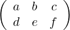
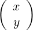
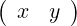

| Up | Next | Tail |
This prefix operator is used to represent n × m matrices. mat has n arguments interpreted as rows of the matrix, each of which is a list of m expressions representing elements in that row. For example, the matrix
|
 |
would be written as mat((a,b,c),(d,e,f)).
Note that the single column matrix
|
 |
becomes mat((x),(y)). The inside parentheses are required to distinguish it from the single row matrix
|
 |
that would be written as mat((x,y)).
| Up | Next | Front |